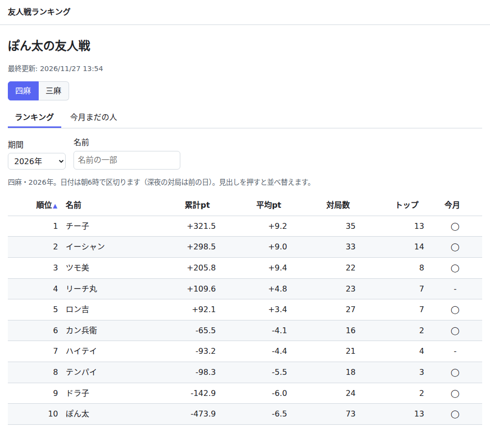
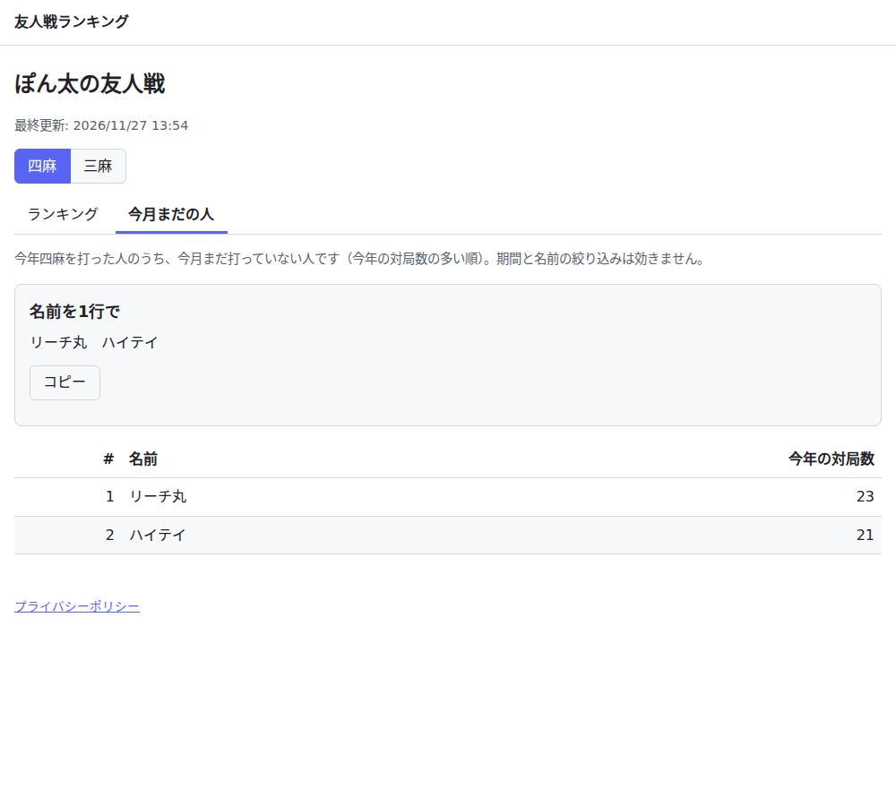
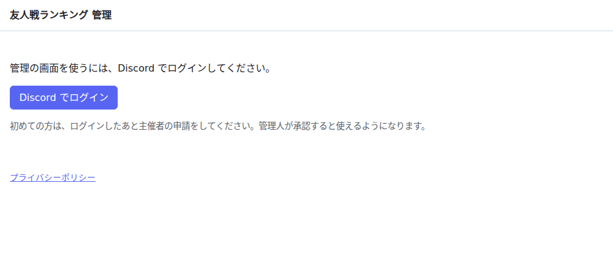
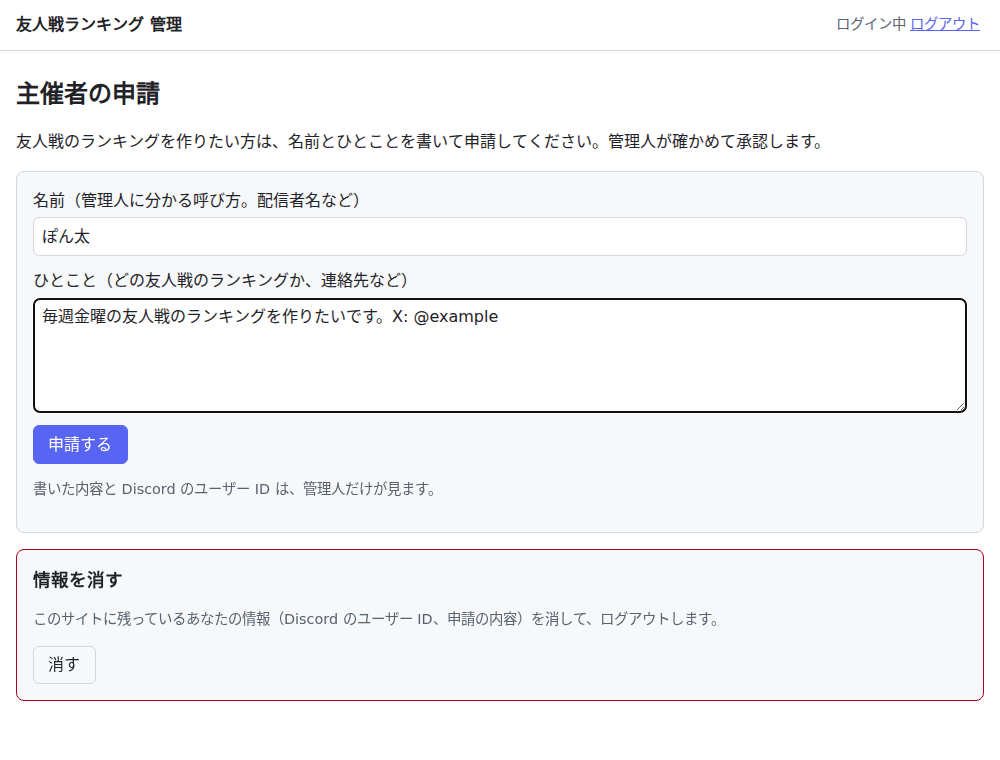
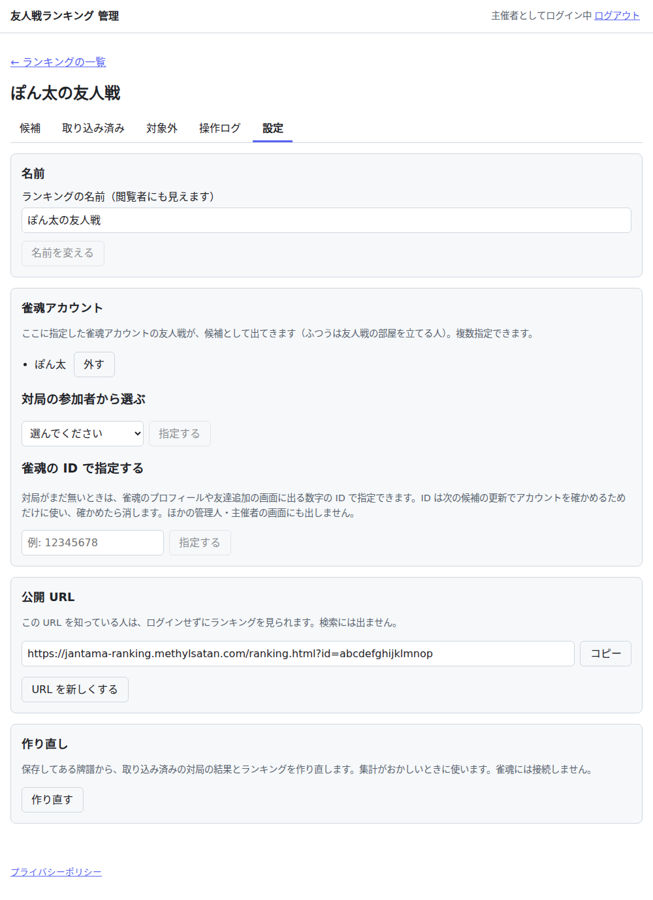
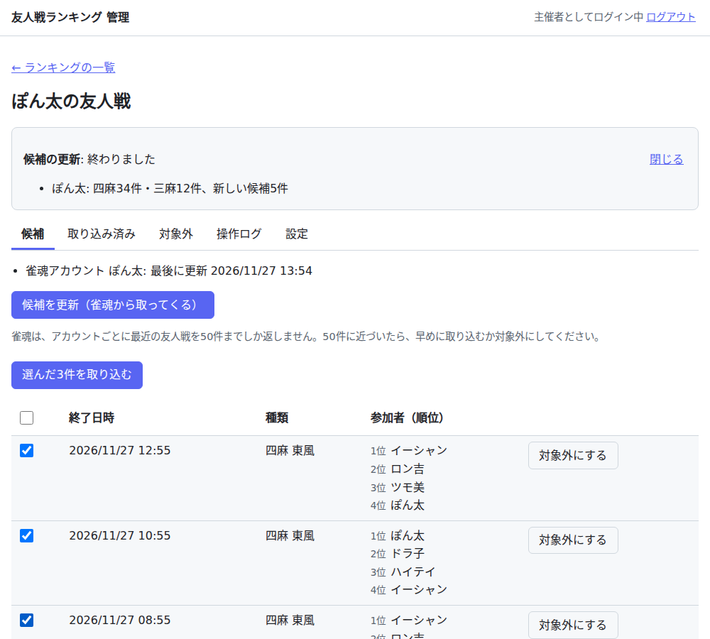

使い方
このサイト（友人戦ランキング）は、雀魂の友人戦の成績をランキングにまとめる、個人が運営する非公式のサイトです。主催者が友人戦の対局を選んで取り込むと、参加者はランキングのページで成績を見られます。
画面の画像の名前と成績は、説明のための架空のものです。
ランキングを見る
主催者から教わったランキングのページ（URL）を開きます。ログインは要りません。

- 四麻 / 三麻: どちらのランキングを見るか切り替えます。
- 期間: はじめは今年の成績です。全期間、年ごと、日付を指定して見ることもできます。日付は朝6時で区切ります（深夜の対局は前の日に数えます）。
- 名前: 名前の一部を入れると、その人だけに絞れます。ひらがなとカタカナ、全角と半角は区別しません。絞っても順位は変わりません。
- 並べ替え: 表の見出し（累計pt、対局数 など）を押すと、その順に並びます。もう一度押すと逆の順になります。
- 今月: 今月すでに参加した人に「◯」が付きます。
「今月まだの人」のタブでは、今年参加した人のうち、今月まだ参加していない人を出します。「コピー」を押すと、名前を1行にまとめた文をコピーできます。

絞り込みや並べ替えをした状態は、ページの URL に入ります。そのときの URL を人に送れば、同じ表を見てもらえます。
主催者になる
自分の友人戦のランキングを作りたい方は、Discord のアカウントで申請してください。
- 管理の画面を開き、「Discord でログイン」を押します。Discord の画面で、このサイトにログインを許可してください。

- 「主催者の申請」の画面で、名前（配信者名など、管理人に分かる呼び方）と、ひとこと（どの友人戦のランキングか、連絡先など）を書いて「申請する」を押します。

- 管理人が確かめて承認し、ランキングを用意して主催者に付けます。そのあと管理の画面を開くと、ランキングが一覧に出ます。
Discord から受け取るのはユーザー ID だけです。申請をやめるときは、同じ画面の「取り下げて消す」で、このサイトに残っている情報を消せます。詳しくはプライバシーポリシーをご覧ください。
ランキングを更新する
管理の画面で、ランキングの名前を押して開きます。上のタブで「候補」「取り込み済み」「対象外」「操作ログ」「設定」を切り替えます。
1. 雀魂アカウントを指定する（はじめの1回）
「設定」のタブの「雀魂アカウント」で、友人戦の対局を取ってくる雀魂のアカウントを指定します。ふつうは友人戦の部屋を立てる人のアカウントです。複数指定できます。
- 対局の参加者から選ぶ: 取り込んだ対局の参加者の中から選びます。
- 雀魂の ID で指定する: まだ対局が無いときは、雀魂のプロフィールや友達追加の画面に出る数字の ID を入れます。

2. 候補を更新する
「候補」のタブで「候補を更新（雀魂から取ってくる）」を押すと、指定した雀魂アカウントの最近の友人戦が、候補として一覧に出ます。数十秒かかることがあるので、終わるまで画面を開いたままお待ちください。
3. 取り込むか、対象外にする
ランキングに入れる対局に印を付けて「選んだ○件を取り込む」を押します。見出しの印で、すべてを選べます。ランキングに入れない対局（練習や、別の集まりの対局など）は「対象外にする」を押します。

取り込みが終わると、ランキングのページに反映されます。
- 取り込んだ対局を外したいときは、「取り込み済み」のタブで「対象外にする」を押します。
- 間違えて対象外にしたときは、「対象外」のタブで「戻す」を押すと元に戻ります。
4. ランキングのページを知らせる
「設定」のタブの「公開 URL」をコピーして、参加者や視聴者に知らせてください。この URL を知っている人は、ログインせずにランキングを見られます。検索には出ません。
URL を知らせたくない人に知られてしまったときは、「URL を新しくする」を押します。今までの URL では見られなくなるので、新しい URL を知らせ直してください。
気をつけること
- こまめに候補を更新してください。雀魂から取ってこられるのは、アカウントごとに最近の友人戦50件までです。それより前の対局は取ってこられなくなります。候補の更新のあとに「取りこぼしたおそれがある」と出たら、前の更新からあいだが空きすぎて、その間の対局の一部を取ってこられなかったかもしれません。
- 雀魂アカウントの持ち主が、ランキング以外の友人戦（ほかの人の部屋での対局など）を打つと、それも候補に出ます。ランキングに入れないものは「対象外にする」を押してください。
- 続けて何度も更新すると、「少し時間をおいてから」と出ることがあります。雀魂に負担をかけないためなので、少し待ってから押してください。
そのほか
- 操作ログ: いつ、だれが（自分かほかの人か）、どんな操作をしたかを見られます。
- 作り直し: 「設定」のタブの「作り直す」で、保存してある牌譜からランキングを作り直します。集計がおかしいと思ったときに使います。
- 名前: 「設定」のタブで、ランキングの名前を変えられます。ランキングのページにも出る名前です。
困ったとき
- 「ランキングが見つかりません」と出る: ランキングが非公開になったか、URL が新しくなった可能性があります。主催者に新しい URL を確かめてください。
- ランキングに載りたくない、記録を消してほしい: 主催者か管理人にご連絡ください。
- そのほかのお問い合わせ: プライバシーポリシーの連絡先から、管理人までご連絡ください。
トップへ